เคียวคู่กล้วยหอม เคียวคู่กล้วยหอม | 1 | 54 | ไม่มีธาตุ | นกกระเต็นดำน้ำ 0.25% |
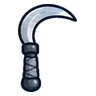 เคียวคู่เงา | 1 | 51 | ไม่มีธาตุ | อาวุธเริ่มต้นของสาย (ได้ตอนเปลี่ยนอาชีพ) |
 เคียวคู่ชาวไร่ เคียวคู่ชาวไร่ | 5 | 56 | ไม่มีธาตุ | แม่มดเทียนไข 0.25% |
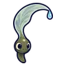 เคียวคู่ลูกอ๊อด | 7 | 52 | น้ำ | กบพ่นน้ำ 0.12% |
 เคียวคู่เมล็ดเมเปิล เคียวคู่เมล็ดเมเปิล | 9 | 56 | ลม | ดอกไม้ยิงเมล็ด 0.25% |
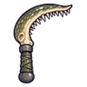 เคียวคู่ขากรรไกรไพค์ | 12 | 52 | น้ำ | ปลาไพค์โคลน ร่างเกล็ดม่วง 0.24% |
 เคียวคู่ขาแมงมุม เคียวคู่ขาแมงมุม | 12 | 49 | พิษ | แมงมุมใยเรือง 0.06% |
 เคียวคู่เขี้ยวใบหญ้า เคียวคู่เขี้ยวใบหญ้า | 14 | 54 | ดิน | หนอนหญ้าซุ่ม 0.25% |
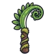 เคียวคู่ยอดเฟิร์น | 14 | 52 | ไม่มีธาตุ | มดทหาร 0.12% |
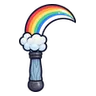 เคียวคู่สายรุ้ง | 17 | 49 | ศักดิ์สิทธิ์ | กระต่ายเขาเดียว 0.06% |
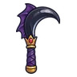 เคียวคู่เล็บราชาค้างคาว | 23 | 67 | มืด | ราตรีราชาค้างคาว 0.5% |
 เคียวคู่เหล็กศึก เคียวคู่เหล็กศึก | 26 | 92 | ไม่มีธาตุ | ตอไม้ผี ร่างเห็ดขึ้น 0.25% |
 เคียวคู่ขากรรไกร เคียวคู่ขากรรไกร | 29 | 82 | ไม่มีธาตุ | โลงผีระเบิด 0.12% |
 เคียวคู่เขาแกะเมฆ เคียวคู่เขาแกะเมฆ | 31 | 87 | ลม | นกกระจอกพายุ 0.25% |
 เคียวคู่รากตอไม้ผี เคียวคู่รากตอไม้ผี | 34 | 91 | ดิน | ตอไม้ผี ร่างเห็ดขึ้น 0.25% |
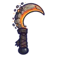 เคียวคู่ภูตเถ้าถ่าน | 36 | 78 | ไฟ | จระเข้หนองพิษ 0.06% |
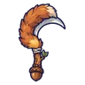 เคียวคู่หางกระรอก | 38 | 82 | ไม่มีธาตุ | ตัวอ่อนต้นแม่พิษ 0.12% |
 เคียวคู่จะงอยอีกา เคียวคู่จะงอยอีกา | 40 | 78 | มืด | อีกาขโมยข้าวโพด 0.06% |
 เคียวคู่เกล็ดกิ้งก่าเปลี่ยนสี เคียวคู่เกล็ดกิ้งก่าเปลี่ยนสี | 42 | 82 | ไม่มีธาตุ | กิ้งก่าทรายจ่าฝูง 0.12% |
 เคียวคู่คลื่นน้ำ เคียวคู่คลื่นน้ำ | 44 | 78 | น้ำ | แพะภูเขา 0.06% |
 เคียวคู่ป้ายหลุมศพ เคียวคู่ป้ายหลุมศพ | 46 | 82 | วิญญาณ | ป้ายหลุมศพผีสิง 0.12% |
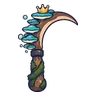 เคียวคู่เห็ดชั้นราชา | 48 | 107 | พิษ | ราชาเห็ดเรืองแสง 0.5% |
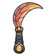 เคียวคู่ปีกนางพญามด | 50 | 107 | ดิน | รังนางพญามด 0.5% |
 เคียวคู่ปากเหยี่ยว เคียวคู่ปากเหยี่ยว | 52 | 126 | ไม่มีธาตุ | กองกระดูกแตกตัว 0.25% |
 เคียวคู่แขนตั๊กแตนตำข้าว เคียวคู่แขนตั๊กแตนตำข้าว | 55 | 112 | ลม | กล้องดูดาวเดินได้ 0.12% |
 เคียวคู่ผีคนเก็บพิษ เคียวคู่ผีคนเก็บพิษ | 56 | 146 | พิษ | ผีคนเก็บพิษ 0.03% |
 เคียวคู่นิ้วโกเลม เคียวคู่นิ้วโกเลม | 58 | 120 | ดิน | ตู้เอกสารโล่ 0.25% |
 เคียวคู่ปลาคาร์ปวิญญาณ เคียวคู่ปลาคาร์ปวิญญาณ | 60 | 107 | วิญญาณ | หนังสือบิน ร่างปกทอง 0.06% |
 เคียวคู่เถาดอกไม้กินคน เคียวคู่เถาดอกไม้กินคน | 62 | 112 | พิษ | ทากพิษแตกตัว 0.12% |
 เคียวคู่นิ้วภูตหมอก เคียวคู่นิ้วภูตหมอก | 64 | 107 | มืด | ผู้จุดตะเกียงกลวง 0.06% |
 เคียวคู่โซ่ตุ้ม เคียวคู่โซ่ตุ้ม | 66 | 112 | ไม่มีธาตุ | แองคิโลซอร์หางค้อน 0.12% |
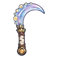 เคียวคู่น้ำค้างรุ่งอรุณ | 68 | 107 | ศักดิ์สิทธิ์ | ทหารวิหาร 0.06% |
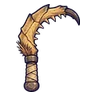 เคียวคู่เขี้ยวแมลงช้าง | 70 | 122 | ดิน | แมลงช้างยักษ์ ร่างเปลือกคราม 0.5% |
 เคียวคู่เล็บแมว เคียวคู่เล็บแมว | 70 | 112 | ไม่มีธาตุ | หุ่นระฆัง 0.12% |
| เคียวคู่ราชาสุสาน | 74 | 146 | มืด | บัลลังก์ราชาสุสาน 0.5% |
 เคียวคู่ชิ้นเอก เคียวคู่ชิ้นเอก | 77 | 151 | ไม่มีธาตุ | ผู้จุดตะเกียงรุ่นแรก ร่างทอง 0.25% |
 เคียวคู่คอนกกระสาเงา เคียวคู่คอนกกระสาเงา | 80 | 144 | มืด | คนกรอกแสง 0.12% |
 เคียวคู่หางจิ้งจอกวิญญาณ เคียวคู่หางจิ้งจอกวิญญาณ | 82 | 137 | วิญญาณ | หนังสือบิน ร่างปกทอง 0.06% |
 เคียวคู่กรามด้วงคีม เคียวคู่กรามด้วงคีม | 84 | 156 | ดิน | นกแร้งหิน 0.25% |
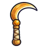 เคียวคู่เปลวสุริยา | 86 | 137 | ศักดิ์สิทธิ์ | ผลึกดาวมีชีวิต 0.06% |
 เคียวคู่ดอกพิษหมาป่า เคียวคู่ดอกพิษหมาป่า | 87 | 144 | พิษ | สไลม์เรืองแสง 0.12% |
 เคียวคู่หอยมุก เคียวคู่หอยมุก | 90 | 151 | ไม่มีธาตุ | ลูกน้องแคนเดิล 0.25% |
 เคียวคู่พายุหมุน เคียวคู่พายุหมุน | 92 | 137 | ลม | ใบมีดกระดาษ 0.06% |
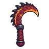 เคียวคู่หางมังกรลาวา | 95 | 187 | ไฟ | หัวใจมังกรลาวา 0.5% |
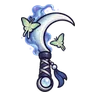 เคียวคู่จันทร์เสี้ยวราตรี | 99 | 203 | มืด | ดรอปทั่วโลก Lv 90+ |